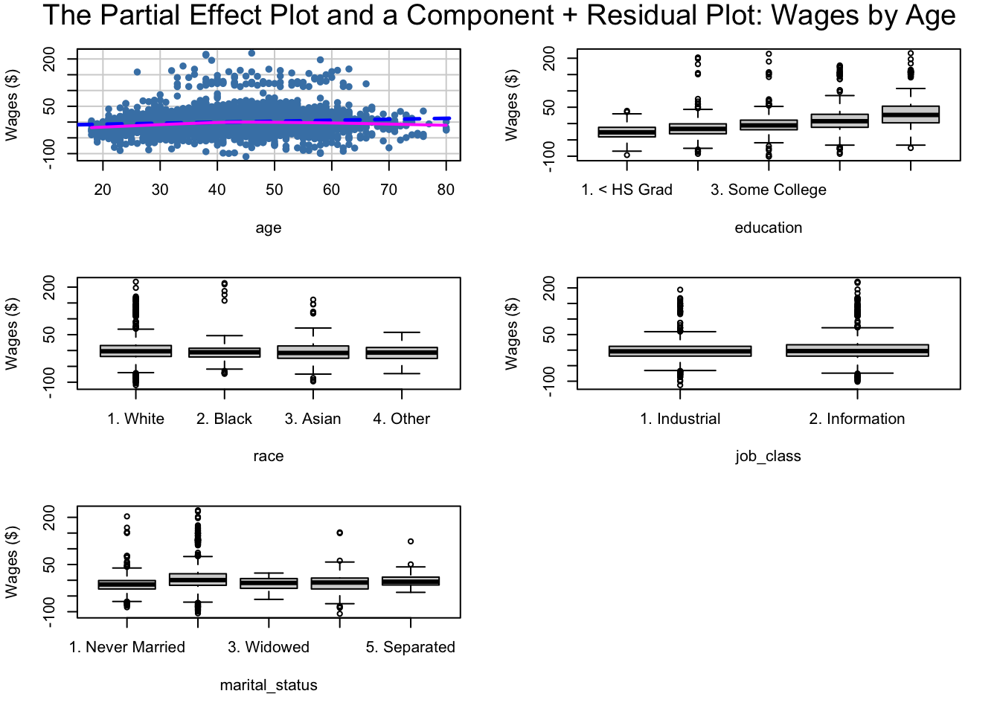
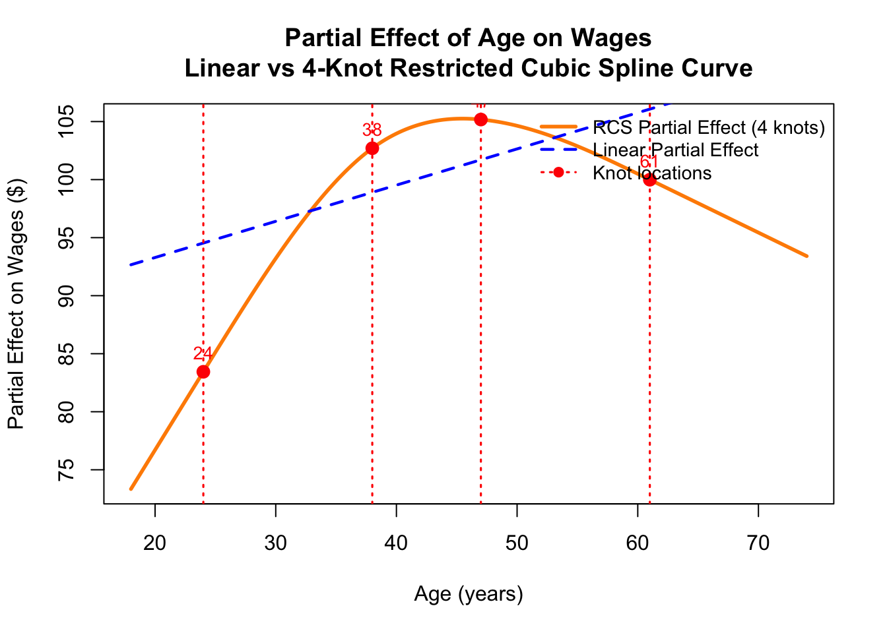
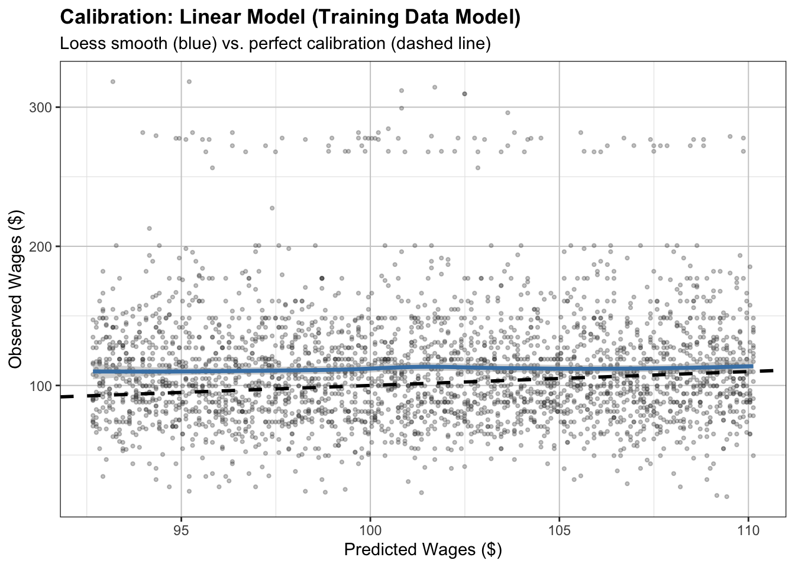
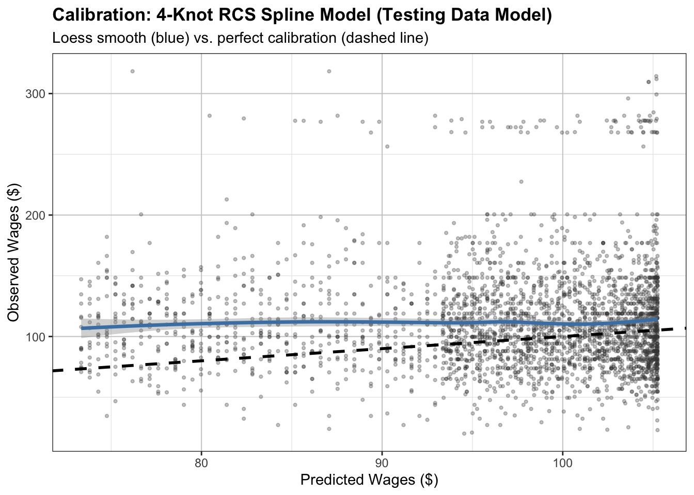

# installing packages
#install.packages("ISLR")
#install.packages("car")
#install.packages("splines")
#install.packages("rms")
#install.packages("ggplot2")
#install.packages("FNN")
# loading packages into the program
require(ISLR)Loading required package: ISLRrequire(car)Loading required package: carLoading required package: carDatarequire(splines)Loading required package: splinesrequire(rms)Loading required package: rmsLoading required package: Hmisc
Attaching package: 'Hmisc'The following objects are masked from 'package:base':
format.pval, units
Attaching package: 'rms'The following objects are masked from 'package:car':
Predict, vifrequire(ggplot2)Loading required package: ggplot2require(FNN)Loading required package: FNNlibrary(ISLR)
library(car)
library(splines)
library(rms)
library(ggplot2)
library(FNN)
# load Wage dataset
data(Wage)
# Task 1. Fit a linear model with age (and any relevant covariates,
# such as education or race) as predictors.
# Create a partial effect plot of age and a component + residual plot (crPlots from the car package).
# Does the relationship between age and wage look linear?
# Rename all the columns of the Wage dataset
colnames(Wage) <- c("year", "age", "marital_status", "race", "education", "region",
"job_class", "health_status", "health_insurance", "log_wage", "wages")
# fitting a linear model with age and wage as predictors along with other relevant covariates such as education, etc...
lm_age <- lm(wages ~ age + education + race + job_class + marital_status, x = TRUE, y = TRUE, data = Wage)
# creating a partial effect plot and component + residual plots to visualize this relationship
crPlots(lm_age,
main = "The Partial Effect Plot and a Component + Residual Plot: Wages by Age",
ylab = "Wages ($)",
col = "steelblue",
pch = 16,
lwd = 2.5,
smooth = loessLine,
span = 0.7)Warning in applyDefaults(smooth, defaults = list(smoother = loessLine, var =
FALSE), : unnamed smooth arguments, will be ignoredWarning in plot.window(...): "span" is not a graphical parameterWarning in plot.xy(xy, type, ...): "span" is not a graphical parameterWarning in axis(side = side, at = at, labels = labels, ...): "span" is not a
graphical parameter
Warning in axis(side = side, at = at, labels = labels, ...): "span" is not a
graphical parameterWarning in box(...): "span" is not a graphical parameterWarning in title(...): "span" is not a graphical parameterWarning in applyDefaults(smooth, defaults = list(smoother = loessLine, var =
FALSE), : unnamed smooth arguments, will be ignored
Warning in applyDefaults(smooth, defaults = list(smoother = loessLine, var =
FALSE), : unnamed smooth arguments, will be ignored
Warning in applyDefaults(smooth, defaults = list(smoother = loessLine, var =
FALSE), : unnamed smooth arguments, will be ignored
Warning in applyDefaults(smooth, defaults = list(smoother = loessLine, var =
FALSE), : unnamed smooth arguments, will be ignored
# Does the relationship between age and wage look linear?
# From the partial effect plot and component + residual plots listed above,
# it appears that the relationship between age and wage does not appear to be strictly linear and mostly non-linear.
# In fact, the partial effect plot that shows the relationship between age and wages shows a large collection of data points that clusters together around the ages from 10-70 years old, but the clusters of the data
# are not smooth and linear. Instead, the shape of the data points distribution is more scattered and does not appear to follow a straight line, but
# instead appears to show the data points being blotched together and randomly scattered in a way that does not follow a linear pattern.
# The only thing to note is that the Purple (solid) line that represents the LOESS (locally weighted smoothing) in this plot shows that
# the data points do not appear to follow a linear pattern due to how the LOESS curve bends slightly downward and even deviated away from the
# linear dottted Blue (dotted) line that represents the linear regression line implied by the fitted model to show the relationship of wages and ages along with the other
# covariates (education, race, job class, marital status, etc..). From these details, it can be concluded that the relationship between age and wages is not linear along
# with the other covariates with being non-linear, not smooth and does not have good relationships between the wages and ages along with the covariates.
# Task 2. Fit a model replacing the linear age term with a 4-knot restricted cubic spline (rcs(age, 4)
# from the rms package). Create a partial effect plot of the RCS term.
# How does the implied curve differ from the linear fit?
# Wage data being restructured to ensure that the column names are consistent with the previous code and to avoid any potential issues with column name mismatches.
dd <- datadist(Wage)
options(datadist = "dd")
# fitting a model replacing the linear age term with a 4-knot restricted cubic spline
rcs_4_cubic_spline_model <- ols(
wages ~ rcs(age, 4) + education + race + job_class + marital_status,
data = Wage, x = TRUE, y = TRUE
)
# Also fit linear version of the model from task 1 for comparison
linear_rms <- ols(
wages ~ age + education + race + job_class + marital_status,
data = Wage, x = TRUE, y = TRUE
)
# Partial effects (both models hold other covariates at datadist reference values)
p_spline <- Predict(rcs_4_cubic_spline_model, age, conf.int = FALSE)
p_linear <- Predict(linear_rms, age, conf.int = FALSE)
# Knot locations (for annotation)
knots <- rcspline.eval(Wage$age, nk = 4, knots.only = TRUE)
# Partial effects for the knot locations to at knots locations
p_knots <- Predict(rcs_4_cubic_spline_model, age = knots)
# plotting the partial effect plot
plot(p_spline$age, p_spline$yhat,
type = "l", lwd = 2.8, col = "darkorange",
xlab = "Age (years)", ylab = "Partial Effect on Wages ($)",
main = "Partial Effect of Age on Wages\nLinear vs 4-Knot Restricted Cubic Spline Curve")
# Linear partial effect placed into the plot for comparison
lines(p_linear$age, p_linear$yhat, col = "blue", lwd = 2.2, lty = 2)
# Setting Knots linear lines
abline(v = knots, col = "red", lty = 3, lwd = 1.6)
# Add knot points
points(p_knots$age, p_knots$yhat, col = "red", pch = 19, cex = 1.3)
# Add knot labels
text(p_knots$age, p_knots$yhat, labels = round(knots, 1), col = "red", pos = 3, cex = 0.85)
# setting the legend to determine the curved and linear partial effect values along with the knot values in the plot
legend("topright",
legend = c("RCS Partial Effect (4 knots)",
"Linear Partial Effect", "Knot locations"),
col = c("darkorange", "blue", "red"),
lwd = c(2.8, 2.2, 1.6),
lty = c(1, 2, 3),
pch = c(NA, NA, 19),
bty = "n", cex = 0.9)
# How does the implied curve differ from the linear fit?
# The implied curve from the 4-knot restricted cubic spline (RCS) model (orange line) differs from the linear fit model (blue line) in several ways.
# The Restricted Cubic Spline (RCS) model allows for more flexibility in capturing the relationship between age and wages,
# resulting in a curve that can bend and adapt to the data. On top of that, the RCS model can capture non-linear patterns and
# the knots at the specified locations in the model allows a slight rate of change and/or slope change to occur in the relationship
# to where the data values in the relationship could experience a sudden exponential increase vertically, a slight increase and then decrease to create a small curve that signals
# a regression back to the previous linear relationship between the wages and ages, a sudden plateau where the data values in the relationship could experience a sudden decrease in a curved shape
# and finally another sudden decrease in values that will show the relationship of the ages and wages to be weaker than usual in the relationship.
# In comparision to the original linear fit relationship, which shows a constant linear and positive rate of change across all ages to wages. The only thing to note is that
# the linear fitted model tends to base its postive linear relationship on the data values that actually have a positive linear relationship between the ages and wages
# which is reflected in how all of the data values of the blue line starts around wages of 92.5 and goes up vertically as the line goes through all of the ages in comparison to the
# orange line which starts its wages measures around 72.5 and its line experience many changes (both vertically and horizontally) as the data line relationship goes through all of the ages values.
# Altogether, the RCS model provides a more nuanced and accurate representation of the relationship between age and wages along with the other covariates in the model in comparison to the linear fit model
# of task 1 which only reflects a somewhat artificial relationship between age and wages along with the covariates in the model.
# Task 3. Compute the cross-validated MSE for both models using k-fold cross-validation (following the approach from earlier modules)
#. Does the spline model offer a meaningful improvement in predictive accuracy?
total_rows_in_wages_data <- nrow(Wage)
# new restructuring of Wage data
dd <- datadist(Wage)
options(datadist = "dd")
# setting k-fold cross-validation k values
k_vals <- 20
folds <- folds <- sample(rep(1:k_vals, length.out = total_rows_in_wages_data))
# Function that computes MSE for one fold
compute_k_cross_validation_mse_value <- function(fold_num) {
# setting the training and testing data
train_data <- Wage[folds != fold_num, ]
test_data <- Wage[folds == fold_num, ]
# Fit BOTH models on training data
fit_lin <- ols(
wages ~ age + education + race + job_class + marital_status,
data = train_data, x = TRUE, y = TRUE
)
fit_rcs <- ols(
wages ~ rcs(age, 4) + education + race + job_class + marital_status,
data = train_data, x = TRUE, y = TRUE # ← FIXED: now using train_data
)
# Predict on the TEST data
pred_lin <- predict(fit_lin, newdata = test_data)
pred_rcs <- predict(fit_rcs, newdata = test_data)
# Return MSEs
c(
linear_mse = mean((pred_lin - test_data$wages)^2),
rcs_mse = mean((pred_rcs - test_data$wages)^2)
)
}
# Apply the function to each fold
cv_results <- lapply(1:k_vals, compute_k_cross_validation_mse_value)
# Convert results to data frame and calculate averages
cv_results_df <- do.call(rbind, cv_results)
mean_cv_mse_linear <- mean(cv_results_df[, "linear_mse"])
mean_cv_mse_rcs <- mean(cv_results_df[, "rcs_mse"])
cat("Linear Model CV MSE: ", round(mean_cv_mse_linear, 2), "\n")Linear Model CV MSE: 1238.11 cat("RCS Spline Model CV MSE:", round(mean_cv_mse_rcs, 2), "\n")RCS Spline Model CV MSE: 1212.38 cat("Difference between models (RCS - Linear):", round(mean_cv_mse_rcs - mean_cv_mse_linear, 2), "\n")Difference between models (RCS - Linear): -25.73 cat("Percentage improvement:", round((mean_cv_mse_rcs - mean_cv_mse_linear) / mean_cv_mse_linear * 100, 2), "%\n")Percentage improvement: -2.08 %# Does the spline model offer a meaningful improvement in predictive accuracy in comparison with the linear model?
# From the calculations that we see from this code, it would be easy to interpret that the Spline or RCS model
# does not offer a meaningful improvement in predictive accuracy because the difference between the two models is
# noticable even if it is noticably small. When the age and wage data from the Linear (training) model and RCS (testing) spline model is loaded into
# the compute_k_cross_validation_mse_value function along with the specified k value (1-20 in total), we can start to see that
# training data and testing data are very different and as they attempt to predict each other's y values with each iteration of k,
# they usually produce wage y values that are different from each other. In particular, the predicted y values from the RCS (testing) spline model and
# the Linear (training) model are always differing from each other regardless of the k value used in this cross valdidation process which in term
# means that there is always a difference in the calculated MSE values between the two models. In this context though, the MSE Cross Validation value for
# the RCS (testing) spline model is much smaller than the MSE Cross Validation value for the linear model.
# As a result of these results, we can conclude the that the Spline or RCS model does not offer a meaningful improvement in predictive accuracy in comparison with the linear model,
# at least in the terms of believing that predictive accuracy is determined by the pureness of the linear line of data that these models are suppose to follow.
# From another context though, the Spline or RCS model does offer a more nuanced and complex predictive accuracy in terms of calculating a K-Fold Cross Validation MSE value
# that takes under the consideration all of the values and changes that comes with the covariates still left in the models when considering that a RCS model is able to capture non-linear behavior
# in its model in comparison to the linear model that only seems to be seeking out
# a pure linear relationship between the ages and wages along with the other covariates in the models.
#Task 4. Create a calibration plot for both models. Does either model show systematic
# miscalibration across the predicted range?
# New Wage data being restructured to avoid column and row mismatches
dd <- datadist(Wage)
options(datadist = "dd")
# recreating Linear and RCS spline models for task 4
# fitting a model for 4-knot restricted cubic spline
rcs_spline_model <- ols(
wages ~ rcs(age, 4) + education + race + job_class + marital_status,
data = Wage, x = TRUE, y = TRUE
)
# fitting a model for being linear from task 1
linear_rms <- ols(
wages ~ age + education + race + job_class + marital_status,
data = Wage, x = TRUE, y = TRUE
)
# Predictions for partial effect plots for age
rcs_spline_prediction <- Predict(rcs_4_cubic_spline_model, age, conf.int = FALSE)
linear_prediction <- Predict(linear_rms, age, conf.int = FALSE)
calibration_of_training_testing_models_df <- data.frame(
original_observed_values = Wage$wages,
prediction_linear_values = linear_prediction$yhat,
predictions_RCS_spline = rcs_spline_prediction$yhat
)
make_calib_plot <- function(df, pred_var, title) {
ggplot(df, aes_string(x = pred_var, y = "original_observed_values")) +
geom_point(alpha = 0.3, color = "gray25", size = 0.8) +
geom_smooth(method = "loess", se = TRUE, color = "steelblue", linewidth = 1.2) +
geom_abline(slope = 1, intercept = 0, color = "black", linetype = "dashed", linewidth = 1) +
labs(
title = title,
subtitle = "Loess smooth (blue) vs. perfect calibration (dashed line)",
x = "Predicted Wages ($)",
y = "Observed Wages ($)"
) +
theme_bw(base_size = 11) +
theme(
panel.grid.major = element_line(color = "grey80", linewidth = 0.35),
panel.grid.minor = element_line(color = "grey90", linewidth = 0.2),
plot.title = element_text(face = "bold", size = 13),
legend.position = "none"
)
}
linear_model_calibration <- make_calib_plot(calibration_of_training_testing_models_df, "prediction_linear_values", "Calibration: Linear Model (Training Data Model)")Warning: `aes_string()` was deprecated in ggplot2 3.0.0.
ℹ Please use tidy evaluation idioms with `aes()`.
ℹ See also `vignette("ggplot2-in-packages")` for more information.rcs_spline_model_calibration <- make_calib_plot(calibration_of_training_testing_models_df, "predictions_RCS_spline", "Calibration: 4-Knot RCS Spline Model (Testing Data Model)")
print(linear_model_calibration)`geom_smooth()` using formula = 'y ~ x'
print(rcs_spline_model_calibration)`geom_smooth()` using formula = 'y ~ x'
# miscalibration across the predicted range?
# After the creation of the calibration plots for both models and the data model that houses all of the data from the models in the code above,
# it would become clear to anyone that there is a huge systematic miscalibration across the predicted range for the linear model in comparison to the 4-knot restricted cubic spline model.
# This systematic miscalibration is expressed in the how the 4-knot restricted cubic spline model tends to have a line that bends and curves across all of the scattered data values/points of
# the entire distribution observed vs predicted wages data while the pure linear model only shows a pure linear relationship line between the predicted and observed wages data values. From these details,
# it would be clear to say that there is a miscalibration or misalignment in the conclusions of these two lines and both of the lines are attempting to tell a different story about the predicted vs observed
# values of wages. Upon some further evaluations of this data model and its other models, it then become clear to me that the closest accurate calibration of this data model would be the
# 4-knot restricted cubic spline model considering that the non-linear and non-normality relationship between the predicted and observed wages data shows a more nuanced and somewhat accurate
# representation of how the observed data is very close to the precticted wages data since the data across the whole data model is very scattered, shapeless and non-linear.
# Altogether though, this data model reveals a huge disconnect and an ability to show a good and accurate calibration plot between the predicted and observed values of wages
# regardless of the linear or 4-knot restricted cubic spline model used. In conclusion, there does not really seem to be huge systematic miscalibration in the data lines of these models at all, but instead
# there does not seem to be any good calibration plot (regardless of the model) to show how the predicted values of wages are close to the observed values of wages and thus there is not good relationship between the predicted and observed values of wages.
#Task 5. State a final conclusion: should the nonlinear spline term be retained,
# or is the linear model adequate? Address practical predictive improvement
#(from MSE and calibration).
# In conclusion, the nonlinear 4-knot restricted cubic spline model/term should be retained and should be considered to be a somewhat good model to interpret
# the non-linear relationship between the predicted and observed values of wages along with interpreting that the wages and ages variables are connected in some way.
# The linear model in this context would not be considered to be a good model to interpret any of the data within this context considering that the linear model is
# only seeking to seek out a pure linear relationship between the ages and wages along with the other covariates in the models and only seeks a linear
# relationship between the predicted and observed values of wages. In other words, the linear model is almost being mutually exclusive in seeking its conclusions and interpreations
# of the relationships within the data in a linear context and structure when it was clear that all of the data in the model was complex, nuanced and scattered from each other which signals
# the need for a non-linear relationship measure and formula to find the relationships in the data. The only thing of noteworthyness in terms of the practical improvements that
# could have been made to enforce this need of keeping the non-linear 4-knot restricted cubic spline model/term would be to improve the MSE score difference to be closer or greater in value
# than the linear model's MSE score in order to make the non-linear nature of the 4-knot restricted cubic spline model could be approximately normal or greater in value than the linear model.
# Then, the non-linear nature of the 4-knot restricted cubic spline model would be able to offer a more predictive accuracy improvement in the prediction of the observed values of wages to the
# predicted values of wages along with showing the positive relationships between the wages and the other covariates (such as ages, education, etc...).